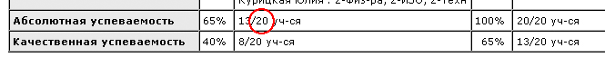
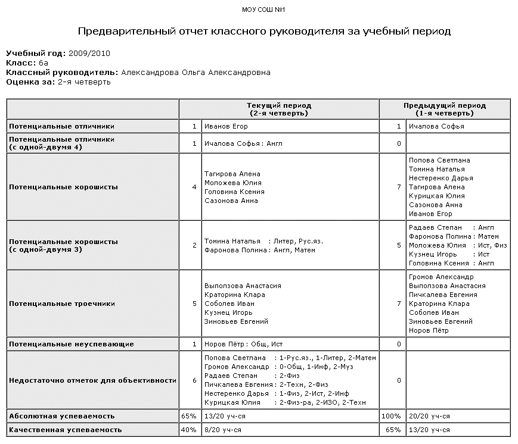

Данный отчет аналогичен Отчету классного руководителя за учебный период, с тем отличием, что оценки в столбце Текущий период вычисляются по текущим отметкам на основе средних баллов по предметам. В столбце Предыдущий период, если такой выводится, оценки вычисляются по итоговым отметкам. Данный отчет позволяет автоматически разделить учащихся в конкретном классе на группы: текущие отличники, текущие потенциальные отличники, текущие хорошисты и др. (см.иллюстрацию). Кроме того, внизу таблицы приводятся абсолютная успеваемость и качественная успеваемость. Формулы, по которым они считаются: Формулы показателей успеваемости.
Примечание: Данный отчет рассчитан на 5-балльную шкалу оценок.
В какую из групп попадает ученик, определяется по следующим формулам:
| · | текущие отличники - средние оценки по всем предметам >= 4,5;
|
| · | текущие потенциальные отличники (с одной-двумя 4) - средние оценки по всем предметам >= 4,5, и есть не более 2 предметов, по которым 3,5 <= средняя оценка < 4,5;
|
| · | текущие хорошисты - по всем предметам 3,5 <= средняя оценка, но при этом ученик не попадает в текущие отличники и текущие потенциальные отличники;
|
| · | текущие потенциальные хорошисты (с одной-двумя 3) - средние оценки по всем предметам >= 3,5, и есть не более 2 предметов, по которым 2,5 <= средняя оценка < 3,5;
|
| · | текущие троечники - по всем предметам 2,5 <= средняя оценка, но при этом ученик не попадает в перечисленные выше группы;
|
| · | текущие неуспевающие - есть хотя бы одна средняя оценка < 2,5.
|
Два вида отчёта: стандартный и расширенный
Если в выбранном классе текущие оценки выставляются по всем предметам, следует использовать расширенный вид отчёта, а если не по всем предметам - то стандартный вид отчёта.
| · | Расширенный вид: выводится графа "Недостаточно отметок для объективности", которая выделяет учащихся, имеющих недостаточно текущих отметок за выбранный учебный период. Согласно типовой школьной инструкции по заполнению журнала, для объективности отметки по предмету необходимо, чтобы учащийся имел:
|
| · | при одном часе в неделю - не менее трёх отметок за учебный период,
|
| · | при двух часах в неделю и более - не менее пяти отметок за учебный период.
|
|
|
| Для каждого учащегося выводится: фамилия, имя, список предметов, по которым недостаточно отметок, а также количество имеющихся отметок в текущем учебном периоде.
|
|
|
| Чтобы отчёт не был перегружен ненужной информацией, графа "Недостаточно отметок для объективности" добавляется в отчёт только в том случае, если до конца учебного периода осталось 3 недели или менее. То есть при условии:
|
| Текущая дата >= (Дата окончания выбранного учебного периода - 21 день)
|
| · | Стандартный вид: графа "Недостаточно отметок для объективности" не выводится.
|
| Для стандартного вида отчёта учитываются только те предметы, по которым есть хотя бы одна отметка. Если по предмету вообще нет текущих отметок - такой предмет игнорируется в 1-м столбце.
|
| Если в предыдущем периоде по предмету нет итоговых отметок - такой предмет игнорируется во 2-м столбце.
|
И в стандартном, и в расширенном виде отчёта общее количество учащихся в строках об успеваемости (цифра после дроби):
 |
Правила, по которым учащиеся исключаются из отчёта (для обоих видов: стандартный и расширенный):
| · | Если по предмету нет расписания в текущем учебном периоде, то этот предмет игнорируется в 1-м столбце отчёта.
|
| · | Если по предмету учащиеся имеют отметки "осв." за предыдущий период, то этот предмет игнорируется во 2-м столбце отчёта.
|
| · | Аналогичным образом, данный отчёт считает, что ученик освобождён от предмета, если предмет делится на подгруппы, но ученик не входит ни в одну из подгрупп.
|
Дополнительно, ученик не учитывается в стандартном виде отчёта, если у него нет ни одной текущей оценки в отчётном периоде.
Средневзвешенные оценки
В этом отчете можно учитывать не только среднеарифметическое, но и средневзвешенное текущих оценок и, тем самым, более объективно оценивать успеваемость учащихся. Каждое задание может иметь свой собственный вес (контрольная, самостоятельная работа, ответ на уроке, проверка тетрадей будут, очевидно, иметь разный "вес"). Как настроить вычисление средневзвешенных оценок?
Примечание: в данном отчёте учитываются текущие отметки, выставленные ранее сегодняшней даты. Отметки за сегодняшнюю дату и более поздние - не учитываются.
Пример отчета:
